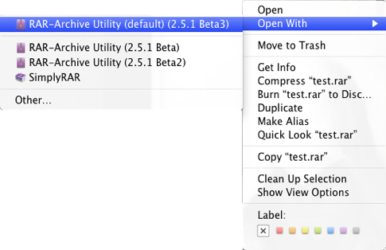
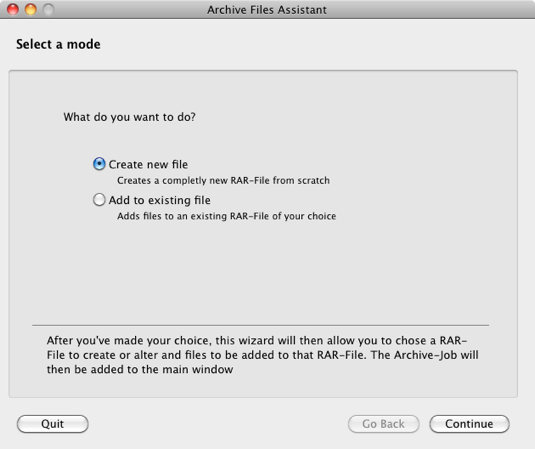

RAR-Archive Utility

Manual

Installing
Simply download the utility on the main page, then copy “build/Release/RAR-Archive Utility” to wherever you want it to be (for example your Utilities folder). That’s pretty much it. You should then start the application once by double-clicking it. That makes the OS aware that the application can open RAR-files. After you’ve done that you’re all set up. If you want to make RAR-Archive Utility your default application for RAR-files, simply select a RAR-file in Finder, press CMD+I and look at the “Open with:” section. Here you can chose “RAR-Archive Utility”. After you’ve selected it, press the “Change All…”-Button below to make RAR-Archive Utility the default for all RAR-files.
Extracting
To extract a file, just right-click it and select “Open With” and then RAR-Archive Utility. If you have set it as your default RAR extractor, you can also simply double-click the file. The extracted files will be copied to the same location as the RAR-file.

Note: For RAR-Archive Utility to show up in the “Open With” application list, you must have opened the application at least once before.
Another way to extract a file is to simply open RAR-Archive Utility and then dragging a RAR-file onto it.
Simple Archiving
If you just want to archive a few files or a folder, the easiest way is to open RAR-Archive Utility and then drag the files onto the applications window. The application will start archiving the files and create an “Archive.rar” at the location of the files. If you drag more files into the window while an archiving process is already running, those files will be archived in a NEW RAR-file.
If you want to add files to an existing RAR-file, there is an easy way for this too: Let’s say you want to add “m1.png” to the archive “test.rar”. All you have to do is select both files in the Finder (or on your desktop), and drag them onto the RAR-Archive Utility together. The utility will recognize that “test.rar” is a RAR-file, and automatically add “m1.png” to “test.rar”.
Careful: Both methods described here should not be used to compress RAR-files (so have a RAR-file inside another RAR-file), as the application will assume that you want to add files to the RAR-file. If you want to compress RAR-files, and for several other additional options, check the Archiving-Wizard.
The Archiving-Wizard
If the basic way of archiving doesn’t fulfill your needs, you can use the Archiving-Wizard to do a lot more. For example it let’s you split or password-protect an archive. Press CMD+A to bring it up.

On the first Page you will have to decide if you want to add files to an already existing RAR-file or if you want to create an entirely new archive.
On the second page you have to either chose an existing RAR-file (if you want to add files to one) or the location of the RAR-file you want to create. In either case, as soon as you have made your choice, you can continue.
The third page is were you can actually set the options for your RAR-file. First you can chose a compression level. Higher compression levels can produce much smaller RAR-files, but it can take an awful long time to create and extract them, so be careful with this option. If the creation of your RAR-file takes too long, maybe you should think about a lower compression level. Next you can chose if you want to password-protect the file. Check the checkbox, then enter the desired password twice to do so. Lastly you can chose if you want to split the RAR-file into multiple parts (this options is not available if you add files to an existing RAR-file). To do so, simply check the checkbox and then enter the size you want the individual parts to have. In the dropdown menu next to the textfield, you can switch between Kilobyte, Megabyte and Gigabyte. You can also enter floating-point numbers (for example you can make every part “50.6 MB” in size).
On the fourth (and final) page you select the files you want to be compressed. Simply drag all the files or folders you want onto the window, then click Finish. The archiving job will be added to the main window and the wizard will close.